선정 모델: M3_L20의 seed 42·43·44 점수 평균, 윈도우 부족 시 M2 보완, 후처리 two_of_three. 정상 보정 자료에서 목표 FPR 0.50%로 정한 임계값 2.588879를 고정했다. 별도 선택 검증에서 FPR 1% 이하 후보 중 Recall, F1, AP, 실행시간 순으로 선정했다. 검증 기준을 충족했다.
최종 평가에서 실제 이상 357개 중 303개 탐지, 54개 미탐. 정상 3990개 중 0개 오경보. 정상 1,000개 관측당 오경보 0.00개.
| role | key | policy | TP | FN | FP | TN | Recall | Precision | F1 | F2 | FPR | AP | PR_AUC_trapezoid | ROC_AUC |
|---|---|---|---|---|---|---|---|---|---|---|---|---|---|---|
| main | M3_L20 | two_of_three | 303 | 54 | 0 | 3990 | 0.84874 | 1.00000 | 0.91818 | 0.87522 | 0.00000 | 0.95862 | 0.95860 | 0.98113 |
| f1_alternative | M3_L20 | two_of_three | 303 | 54 | 0 | 3990 | 0.84874 | 1.00000 | 0.91818 | 0.87522 | 0.00000 | 0.95862 | 0.95860 | 0.98113 |
최종 평가 정상 3990행, 이상 357행, 이상 비율 8.21%. 이 표의 점수는 행 단위다. 버스트 한 점의 탐지를 전체 행 정답으로 확장하지 않았다. 날짜와 상태가 완전히 겹쳐 있으므로 고장 특성과 날짜별 운전조건을 구분한 성능은 아니다.
선정 임계값에서 후처리 전→후: FP 1→0, FN 42→54, Recall 88.24%→84.87%. 실제 고장 시작 시각이 없어 고장 사전 예측 시간은 검증하지 못했다. 현재 검증한 것은 주어진 상태 라벨의 탐지와 관측 구간 안에서의 경보 동작이다.
같은 길이20의 공통 행에서 버스트 고려 M4−미고려 M3 차이는 Recall -8.50%p, F1 -0.0569, FPR +0.15%p였다(정상 보정 목표FPR1%, 후처리 없음). 이는 위의 최종 운영 방식과 조건이 다른 순수 쌍별 비교다.
현장 적용 전에는 정상·이상 전환을 포함한 여러 날짜·설비의 기록, 고장/정비 확정 시각, 부하·회전수·제품·작업단계, 센서 단위와 취득 필터, 현장 이상 비율 및 오경보 비용이 필요하다. 선정 시점과 고정 규칙
분석 단위는 센서의 한 시각 관측 행이다. 버스트는 거의 0.1초 간격으로 이어진 관측 구간이며 실제 기계 사이클이나 독립 고장 사건이 아니다. 가이드북 PDF 9·11쪽에서 AI0=상부 진동, AI1=하부 진동, AI2=전류를 확인했다. 센서 단위, 개별 생산품, 설비 ID, 부하 조건, 실제 고장 종류는 미확인이다. 배경의 기어 마모·유압 저하·불량·비가동은 이 CSV에서 검증한 측정 결과가 아니다.
| file | original_rows | analysis_rows | duplicates_removed | missing | numeric_failure | timestamp_failure | bursts |
|---|---|---|---|---|---|---|---|
| press_data_normal.csv | 20000 | 19999 | 1 | 0 | 0 | 0 | 599 |
| outlier_data.csv | 600 | 600 | 0 | 0 | 0 | 0 | 21 |
이전 점검과 원본 행 수·결측·변환 실패·중복·큰 간격은 일치했다. 정상의 11,565·11,566번째 관측 중 뒤 행만 분석 목록에서 제외했다. TimeStamp·3센서·Equipment_state가 모두 같은 추가 중복만 제거했고, 큰 센서값은 자르거나 삭제하지 않았다. 원본 CSV는 해시로 보존을 확인했다. 행 번호·파일명·날짜·burst_id·Equipment_state는 검출기 입력에 넣지 않았다.
원본 전체 20,600행에서 모두 정상 예측 Accuracy는 97.0874%다. 이 때문에 Accuracy는 보조 지표로만 사용했다. 전체 요약 통계를 분할 전에 이미 살펴본 사실을 명시한다. 완전히 보지 않은 신규 날짜 외부 검증은 아니다.
| Unnamed: 0 | AI0_Vibration | AI0_Vibration.1 | AI0_Vibration.2 | AI0_Vibration.3 | AI1_Vibration | AI1_Vibration.1 | AI1_Vibration.2 | AI1_Vibration.3 | AI2_Current | AI2_Current.1 | AI2_Current.2 | AI2_Current.3 |
|---|---|---|---|---|---|---|---|---|---|---|---|---|
| 미정의 | min | median | max | std | min | median | max | std | min | median | max | std |
| label | 미정의 | 미정의 | 미정의 | 미정의 | 미정의 | 미정의 | 미정의 | 미정의 | 미정의 | 미정의 | 미정의 | 미정의 |
| 0 | -0.31457 | -0.000166 | 0.351699 | 0.07063483765516952 | -0.366498 | -0.009313 | 0.399782 | 0.11889063295527885 | -271.56833 | 1.847744 | 273.235 | 122.66607816223802 |
| 1 | -1.5027352 | 0.015770585 | 1.8032037 | 0.4479280674749332 | -0.7512533 | 0.00216106905 | 0.50932143 | 0.2412263780678153 | -399.35117 | 53.644187 | 538.82605 | 153.17261944641666 |
전체 진단 · 가장 큰 시간 점프 · 중복 제거 후 센서 통계 (표준편차 ddof=1)
| label | split | rows | bursts | start | end |
|---|---|---|---|---|---|
| 0 | train | 12012 | 360 | 2022-07-12 00:00:00.019 | 2022-07-12 00:45:07.256 |
| 0 | calibration | 2011 | 63 | 2022-07-12 00:45:10.440 | 2022-07-12 00:53:17.956 |
| 0 | selection | 1986 | 58 | 2022-07-12 00:53:19.759 | 2022-07-12 01:01:01.732 |
| 0 | test | 3990 | 118 | 2022-07-12 01:01:04.524 | 2022-07-12 01:16:55.828 |
| 1 | calibration | 132 | 4 | 2022-07-17 10:51:07.943 | 2022-07-17 10:51:34.734 |
| 1 | selection | 111 | 4 | 2022-07-17 10:51:39.999 | 2022-07-17 10:52:08.307 |
| 1 | test | 357 | 13 | 2022-07-17 10:52:12.567 | 2022-07-17 10:53:53.540 |
정상 약60/20/20%, 이상 약40/60%를 시간 순서로 나누고, 개발 구간을 다시 앞쪽 보정·뒤쪽 선택 검증으로 나눴다. 정확한 비율보다 동일 버스트 보존을 우선했다. 정상 학습 내부 약85%는 LSTM 학습, 나머지는 조기 종료에 썼고 양쪽 경계를 넘는 윈도우도 금지했다. IF는 정상 학습 전체를 사용했다. 정규화는 정상 학습 자료에서만 적합했다.
0.5초 초과 간격은 새 버스트로 정했다. 정상 학습 자료의 0.2/0.5/1초 기준은 모두 360개 버스트로, 행별 구분도 같아 중복 실험을 생략했다. 이는 이번 실험의 가정이다. 큰 공백은 미관측 상태이며 보간하지 않았다.
| label | split | window | bursts | short_bursts | short_burst_fraction | short_burst_rows | observed_duration_seconds | wall_span_seconds |
|---|---|---|---|---|---|---|---|---|
| 0 | calibration | 10 | 63 | 8 | 0.12698 | 30 | 194.80000 | 487.51600 |
| 0 | selection | 10 | 58 | 4 | 0.06897 | 24 | 192.80000 | 461.97300 |
| 0 | test | 10 | 118 | 11 | 0.09322 | 66 | 387.20000 | 951.30400 |
| 0 | train | 10 | 360 | 46 | 0.12778 | 238 | 1165.20000 | 2707.23700 |
| 1 | calibration | 10 | 4 | 1 | 0.25000 | 4 | 12.80000 | 26.79100 |
| 1 | selection | 10 | 4 | 1 | 0.25000 | 3 | 10.70000 | 28.30800 |
| 1 | test | 10 | 13 | 2 | 0.15385 | 12 | 34.40000 | 100.97300 |
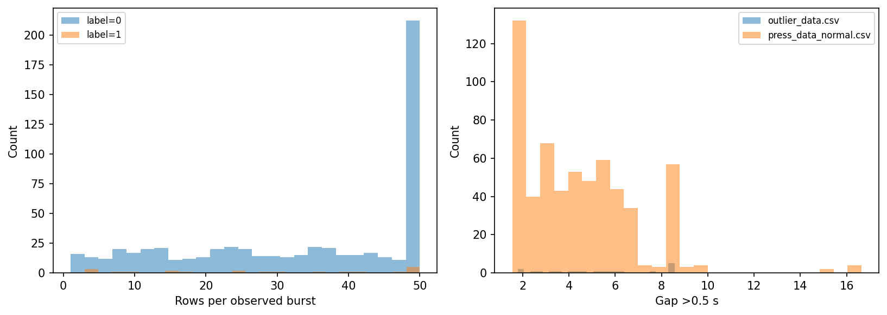
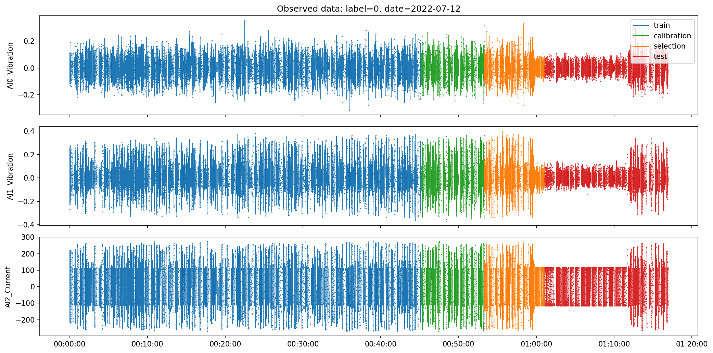
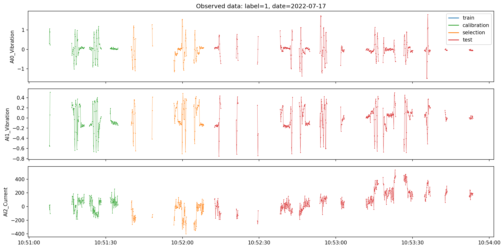
| 모델 | 검출기 | 시간 처리 |
|---|---|---|
| M0 | LSTM-AE | 버스트 미고려 |
| M1 | 동일 LSTM-AE | 버스트 내부 |
| M2 | 3센서 한 행 Isolation Forest | 시간 윈도우 없음 |
| M3 | 15개 시간영역 특징 Isolation Forest | 버스트 미고려 |
| M4 | M3와 동일 특징·설정 | 버스트 내부 |
LSTM: 3센서 절댓값→MinMaxScaler, encoder64→32, repeat, decoder32→64, 선형3 출력. 학습은 전체 시퀀스 MSE, 점수는 마지막 관측 3센서 MSE. Adam .001, batch128, 최대20epoch, 조기종료 patience4/min_delta1e-5, LR factor.7/patience2, CPU 2 threads. 검출기는 정상 자료로만 학습했지만 선택·확률 보정에는 개발 이상 라벨을 썼으므로 전체 과정을 완전 비지도라고 부르지 않는다.
IF: 300 trees, max_samples256, seeds42/43/44, contamination=auto. 모델 내 자동 판정은 사용하지 않고 -score_samples로 클수록 이상하게 통일했다. M3/M4는 부호를 보존한 센서별 평균·모집단 표준편차(ddof=0)·RMS(sqrt(mean(x²)))·최소·최대의 15특징이다. 길이5/10/20, stride1, 후방 윈도우이며 마지막 행에 점수를 대응했다. FFT는 쓰지 않았다.
가이드북 정확 재현 미완료: 원문은 길이20, 최대800epoch, early patience120, 정상15000행 학습, 윈도우를 만든 뒤 검증 구분, 100시점 뒤 라벨 및 검증 P=R 임계값이다. 여기서는 PyTorch 구조 기반 공통 분할 비교로 바꿨다. 프레임워크 초기화·학습 예산 등도 다르다. 원문의 참고 F1 74.76%, Accuracy97.51%(TN3922 FP78 TP154 FN26)는 이번 평가 수치와 직접 비교하지 않는다. 원문 미래 라벨 방식만으로 10초 사전 예측이 입증되는 것은 아니다.
10Hz라는 사실만으로 앨리어싱 발생 여부를 확정할 수 없다. 원 신호 대역폭·센서 취득 주파수·안티앨리어싱 필터 확인이 필요하다. 시간영역 모델도 이미 발생한 앨리어싱을 제거하지 못한다.
| key | seed | matched | fit_seconds | training_windows | early_stop_windows | epochs |
|---|---|---|---|---|---|---|
| M2_L1 | 42 | False | 1.00033 | 12012 | 0 | 0 |
| M2_L1 | 43 | False | 1.03333 | 12012 | 0 | 0 |
| M2_L1 | 44 | False | 0.81305 | 12012 | 0 | 0 |
| M0_L5 | 42 | False | 42.16469 | 10194 | 1810 | 20 |
| M0_L5 | 43 | False | 46.04506 | 10194 | 1810 | 20 |
| M0_L5 | 44 | False | 43.53862 | 10194 | 1810 | 20 |
| M1_L5 | 42 | False | 37.27215 | 9009 | 1596 | 20 |
| M1_L5 | 43 | False | 40.02895 | 9009 | 1596 | 20 |
| M1_L5 | 44 | False | 39.52106 | 9009 | 1596 | 20 |
| M3_L5 | 42 | False | 0.86918 | 12004 | 0 | 0 |
| M3_L5 | 43 | False | 0.96070 | 12004 | 0 | 0 |
| M3_L5 | 44 | False | 1.13796 | 12004 | 0 | 0 |
| M4_L5 | 42 | False | 0.91165 | 10605 | 0 | 0 |
| M4_L5 | 43 | False | 0.82960 | 10605 | 0 | 0 |
| M4_L5 | 44 | False | 0.80135 | 10605 | 0 | 0 |
| M0_L10 | 42 | False | 71.05139 | 10189 | 1805 | 20 |
| M0_L10 | 43 | False | 70.98611 | 10189 | 1805 | 20 |
| M0_L10 | 44 | False | 68.55156 | 10189 | 1805 | 20 |
| M1_L10 | 42 | False | 48.91272 | 7598 | 1350 | 20 |
| M1_L10 | 43 | False | 50.64103 | 7598 | 1350 | 20 |
| M1_L10 | 44 | False | 51.52523 | 7598 | 1350 | 20 |
| M3_L10 | 42 | False | 0.83794 | 11994 | 0 | 0 |
| M3_L10 | 43 | False | 0.83640 | 11994 | 0 | 0 |
| M3_L10 | 44 | False | 0.81131 | 11994 | 0 | 0 |
| M4_L10 | 42 | False | 0.75375 | 8948 | 0 | 0 |
| M4_L10 | 43 | False | 1.01436 | 8948 | 0 | 0 |
| M4_L10 | 44 | False | 1.03895 | 8948 | 0 | 0 |
| M0_L20 | 42 | False | 119.45403 | 10179 | 1795 | 20 |
| M0_L20 | 43 | False | 123.30436 | 10179 | 1795 | 20 |
| M0_L20 | 44 | False | 126.31497 | 10179 | 1795 | 20 |
| M1_L20 | 42 | False | 59.33139 | 5125 | 896 | 20 |
| M1_L20 | 43 | False | 48.73593 | 5125 | 896 | 15 |
| M1_L20 | 44 | False | 39.65779 | 5125 | 896 | 12 |
| M3_L20 | 42 | False | 0.90231 | 11974 | 0 | 0 |
| M3_L20 | 43 | False | 0.84224 | 11974 | 0 | 0 |
| M3_L20 | 44 | False | 0.84424 | 11974 | 0 | 0 |
| M4_L20 | 42 | False | 0.81445 | 6021 | 0 | 0 |
| M4_L20 | 43 | False | 1.08229 | 6021 | 0 | 0 |
| M4_L20 | 44 | False | 0.96650 | 6021 | 0 | 0 |
기본 LSTM 18개 학습 중 16개가 최대20epoch에 도달했다. 따라서 이번 계산 예산에서의 비교이며, 더 오래 학습한 LSTM의 잠재 성능이나 두 모델 계열의 일반적인 우열을 입증하지 않는다.
모든 모델·윈도우가 판단할 수 있는 동일 마지막 행의 교집합을 점수 계산 전에 저장했다. 아래 공통 행 비교는 구간 시작과 짧은 버스트의 어려운 행을 제외한다. native 범위는 모델별 진단용이며 서로 다른 행에서 계산한 성능으로 순위를 정하지 않았다. 동일 길이 쌍 비교는 해당 길이의 공통 행을 따로 사용한다.
| key | N | TP | FN | FP | TN | Recall | Precision | F1 | F2 | FPR | AP |
|---|---|---|---|---|---|---|---|---|---|---|---|
| M2_L1 | 2141 | 39 | 114 | 3 | 1985 | 0.25490 | 0.92857 | 0.40000 | 0.29817 | 0.00151 | 0.59998 |
| M0_L5 | 2141 | 60 | 93 | 1 | 1987 | 0.39216 | 0.98361 | 0.56075 | 0.44577 | 0.00050 | 0.74479 |
| M1_L5 | 2141 | 86 | 67 | 1 | 1987 | 0.56209 | 0.98851 | 0.71667 | 0.61516 | 0.00050 | 0.85462 |
| M3_L5 | 2141 | 73 | 80 | 1 | 1987 | 0.47712 | 0.98649 | 0.64317 | 0.53207 | 0.00050 | 0.96072 |
| M4_L5 | 2141 | 77 | 76 | 3 | 1985 | 0.50327 | 0.96250 | 0.66094 | 0.55636 | 0.00151 | 0.95337 |
| M0_L10 | 2141 | 51 | 102 | 1 | 1987 | 0.33333 | 0.98077 | 0.49756 | 0.38404 | 0.00050 | 0.65546 |
| M1_L10 | 2141 | 57 | 96 | 1 | 1987 | 0.37255 | 0.98276 | 0.54028 | 0.42537 | 0.00050 | 0.74726 |
| M3_L10 | 2141 | 127 | 26 | 0 | 1988 | 0.83007 | 1.00000 | 0.90714 | 0.85927 | 0.00000 | 0.99529 |
| M4_L10 | 2141 | 124 | 29 | 0 | 1988 | 0.81046 | 1.00000 | 0.89531 | 0.84239 | 0.00000 | 0.99565 |
| M0_L20 | 2141 | 50 | 103 | 1 | 1987 | 0.32680 | 0.98039 | 0.49020 | 0.37707 | 0.00050 | 0.73199 |
| M1_L20 | 2141 | 48 | 105 | 3 | 1985 | 0.31373 | 0.94118 | 0.47059 | 0.36199 | 0.00151 | 0.62204 |
| M3_L20 | 2141 | 143 | 10 | 3 | 1985 | 0.93464 | 0.97945 | 0.95652 | 0.94327 | 0.00151 | 0.99747 |
| M4_L20 | 2141 | 130 | 23 | 6 | 1982 | 0.84967 | 0.95588 | 0.89965 | 0.86898 | 0.00302 | 0.98519 |
전체 행에서는 완전 윈도우가 없는 행을 M2로 보완했다. 원시 복원오차와 IF점수를 직접 연결하지 않았다. 각 모델의 정상 보정 점수 분위수를 표준정규 분위수에 대응시키고 양 끝을 선형 외삽한 뒤, seed별 M2 보완과 3seed 평균을 적용했다. 전체 정상 보정 분포에서 임계값을 다시 구했다. 이 공통 점수는 고장 확률이 아니다. 같은 보정 정상 자료를 변환과 임계값에 썼으므로 성능은 별도 선택·최종 구간에서 확인했다.
| key | label | total | available | excluded | coverage | crossing_windows | median_elapsed_seconds | max_elapsed_seconds |
|---|---|---|---|---|---|---|---|---|
| M2_L1 | 0 | 3990 | 3990 | 0 | 1.00000 | 0 | 0.00000 | 0.00000 |
| M2_L1 | 1 | 357 | 357 | 0 | 1.00000 | 0 | 0.00000 | 0.00000 |
| M0_L10 | 0 | 3990 | 3981 | 9 | 0.99774 | 1020 | 0.90000 | 23.05500 |
| M0_L10 | 1 | 357 | 348 | 9 | 0.97479 | 102 | 0.90000 | 16.85400 |
| M1_L10 | 0 | 3990 | 2961 | 1029 | 0.74211 | 0 | 0.90000 | 0.90000 |
| M1_L10 | 1 | 357 | 246 | 111 | 0.68908 | 0 | 0.90000 | 0.90000 |
| M3_L10 | 0 | 3990 | 3981 | 9 | 0.99774 | 1020 | 0.90000 | 23.05500 |
| M3_L10 | 1 | 357 | 348 | 9 | 0.97479 | 102 | 0.90000 | 16.85400 |
| M4_L10 | 0 | 3990 | 2961 | 1029 | 0.74211 | 0 | 0.90000 | 0.90000 |
| M4_L10 | 1 | 357 | 246 | 111 | 0.68908 | 0 | 0.90000 | 0.90000 |
| key | N | TP | FN | FP | TN | Recall | Precision | F1 | F2 | FPR | AP |
|---|---|---|---|---|---|---|---|---|---|---|---|
| M2_L1 | 4347 | 89 | 268 | 5 | 3985 | 0.24930 | 0.94681 | 0.39468 | 0.29238 | 0.00125 | 0.59764 |
| M0_L5 | 4347 | 155 | 202 | 5 | 3985 | 0.43417 | 0.96875 | 0.59961 | 0.48804 | 0.00125 | 0.73084 |
| M1_L5 | 4347 | 188 | 169 | 3 | 3987 | 0.52661 | 0.98429 | 0.68613 | 0.58061 | 0.00075 | 0.82420 |
| M3_L5 | 4347 | 173 | 184 | 3 | 3987 | 0.48459 | 0.98295 | 0.64916 | 0.53928 | 0.00075 | 0.92434 |
| M4_L5 | 4347 | 163 | 194 | 6 | 3984 | 0.45658 | 0.96450 | 0.61977 | 0.51033 | 0.00150 | 0.88589 |
| M0_L10 | 4347 | 129 | 228 | 9 | 3981 | 0.36134 | 0.93478 | 0.52121 | 0.41188 | 0.00226 | 0.65201 |
| M1_L10 | 4347 | 125 | 232 | 3 | 3987 | 0.35014 | 0.97656 | 0.51546 | 0.40167 | 0.00075 | 0.70268 |
| M3_L10 | 4347 | 282 | 75 | 0 | 3990 | 0.78992 | 1.00000 | 0.88263 | 0.82456 | 0.00000 | 0.96574 |
| M4_L10 | 4347 | 213 | 144 | 3 | 3987 | 0.59664 | 0.98611 | 0.74346 | 0.64781 | 0.00075 | 0.86063 |
| M0_L20 | 4347 | 127 | 230 | 9 | 3981 | 0.35574 | 0.93382 | 0.51521 | 0.40601 | 0.00226 | 0.69007 |
| M1_L20 | 4347 | 98 | 259 | 5 | 3985 | 0.27451 | 0.95146 | 0.42609 | 0.32005 | 0.00125 | 0.60442 |
| M3_L20 | 4347 | 321 | 36 | 6 | 3984 | 0.89916 | 0.98165 | 0.93860 | 0.91453 | 0.00150 | 0.95862 |
| M4_L20 | 4347 | 182 | 175 | 8 | 3982 | 0.50980 | 0.95789 | 0.66545 | 0.56242 | 0.00201 | 0.71858 |
| pair | window | N | delta_Recall | delta_F1 | delta_FPR | delta_AP |
|---|---|---|---|---|---|---|
| M0/M1 | 5 | 3827 | 0.15082 | 0.13528 | 0.00028 | 0.10662 |
| M0/M1 | 10 | 3207 | 0.05285 | 0.05526 | 0.00034 | 0.08952 |
| M0/M1 | 20 | 2141 | -0.01307 | -0.01961 | 0.00101 | -0.10995 |
| M3/M4 | 5 | 3827 | 0.02623 | 0.01965 | 0.00085 | -0.00478 |
| M3/M4 | 10 | 3207 | -0.02846 | -0.02809 | 0.00169 | -0.00263 |
| M3/M4 | 20 | 2141 | -0.08497 | -0.05687 | 0.00151 | -0.01228 |
delta는 버스트 고려−미고려이며 0.01은 1%p 차이다. 위 표는 같은 길이·같은 행 비교다. 학습 윈도우 수는 training_budget.csv, 포함/제외 대상은 manifests/rows_*.csv에 저장했다. 개선이 관측된 개발 비교만 미고려 학습 윈도우를 고려 모델 수에 맞춰 추가 학습했다. 이 표본 수 보조 실험은 개발 자료에서만 해석한다.
| key | aware | seed | TP | FN | FP | TN | N | positive_rate | Recall | Precision | F1 | F2 | FPR | FNR | AP | PR_AUC_trapezoid | ROC_AUC | Accuracy | FP_per_1000 |
|---|---|---|---|---|---|---|---|---|---|---|---|---|---|---|---|---|---|---|---|
| M0_L5 | M1_L5 | 42 | 55 | 41 | 7 | 1747 | 1850 | 0.05189 | 0.57292 | 0.88710 | 0.69620 | 0.61659 | 0.00399 | 0.42708 | 0.71232 | 0.71174 | 0.89709 | 0.97405 | 3.99088 |
| M0_L5 | M1_L5 | 43 | 44 | 52 | 11 | 1743 | 1850 | 0.05189 | 0.45833 | 0.80000 | 0.58278 | 0.50114 | 0.00627 | 0.54167 | 0.61514 | 0.61430 | 0.86699 | 0.96595 | 6.27138 |
| M0_L5 | M1_L5 | 44 | 46 | 50 | 16 | 1738 | 1850 | 0.05189 | 0.47917 | 0.74194 | 0.58228 | 0.51570 | 0.00912 | 0.52083 | 0.61375 | 0.61300 | 0.83680 | 0.96432 | 9.12201 |
| M0_L10 | M1_L10 | 42 | 35 | 46 | 13 | 1463 | 1557 | 0.05202 | 0.43210 | 0.72917 | 0.54264 | 0.47043 | 0.00881 | 0.56790 | 0.56184 | 0.56078 | 0.83883 | 0.96211 | 8.80759 |
| M0_L10 | M1_L10 | 43 | 39 | 42 | 13 | 1463 | 1557 | 0.05202 | 0.48148 | 0.75000 | 0.58647 | 0.51862 | 0.00881 | 0.51852 | 0.58617 | 0.58524 | 0.86231 | 0.96468 | 8.80759 |
| M0_L10 | M1_L10 | 44 | 34 | 47 | 16 | 1460 | 1557 | 0.05202 | 0.41975 | 0.68000 | 0.51908 | 0.45455 | 0.01084 | 0.58025 | 0.55651 | 0.55540 | 0.86078 | 0.95954 | 10.84011 |
| M3_L5 | M4_L5 | 42 | 67 | 29 | 15 | 1739 | 1850 | 0.05189 | 0.69792 | 0.81707 | 0.75281 | 0.71888 | 0.00855 | 0.30208 | 0.81839 | 0.81790 | 0.97178 | 0.97622 | 8.55188 |
| M3_L5 | M4_L5 | 43 | 69 | 27 | 21 | 1733 | 1850 | 0.05189 | 0.71875 | 0.76667 | 0.74194 | 0.72785 | 0.01197 | 0.28125 | 0.81458 | 0.81409 | 0.97113 | 0.97405 | 11.97263 |
| M3_L5 | M4_L5 | 44 | 67 | 29 | 25 | 1729 | 1850 | 0.05189 | 0.69792 | 0.72826 | 0.71277 | 0.70378 | 0.01425 | 0.30208 | 0.81848 | 0.81796 | 0.97326 | 0.97081 | 14.25314 |
| M3_L10 | M4_L10 | 42 | 64 | 17 | 23 | 1453 | 1557 | 0.05202 | 0.79012 | 0.73563 | 0.76190 | 0.77859 | 0.01558 | 0.20988 | 0.90186 | 0.90146 | 0.99109 | 0.97431 | 15.58266 |
| M3_L10 | M4_L10 | 43 | 66 | 15 | 30 | 1446 | 1557 | 0.05202 | 0.81481 | 0.68750 | 0.74576 | 0.78571 | 0.02033 | 0.18519 | 0.89547 | 0.89507 | 0.98982 | 0.97110 | 20.32520 |
| M3_L10 | M4_L10 | 44 | 66 | 15 | 25 | 1451 | 1557 | 0.05202 | 0.81481 | 0.72527 | 0.76744 | 0.79518 | 0.01694 | 0.18519 | 0.90311 | 0.90272 | 0.99104 | 0.97431 | 16.93767 |
| M3_L20 | M4_L20 | 42 | 52 | 0 | 18 | 967 | 1037 | 0.05014 | 1.00000 | 0.74286 | 0.85246 | 0.93525 | 0.01827 | 0.00000 | 1.00000 | 1.00000 | 1.00000 | 0.98264 | 18.27411 |
| M3_L20 | M4_L20 | 43 | 52 | 0 | 25 | 960 | 1037 | 0.05014 | 1.00000 | 0.67532 | 0.80620 | 0.91228 | 0.02538 | 0.00000 | 0.99863 | 0.99861 | 0.99992 | 0.97589 | 25.38071 |
| M3_L20 | M4_L20 | 44 | 52 | 0 | 24 | 961 | 1037 | 0.05014 | 1.00000 | 0.68421 | 0.81250 | 0.91549 | 0.02437 | 0.00000 | 0.99223 | 0.99216 | 0.99957 | 0.97686 | 24.36548 |
| model | dev_selected_key | target_fpr | dev_FPR | dev_Recall | test_FPR | test_Recall | test_F1 |
|---|---|---|---|---|---|---|---|
| M0 | M0_L5 | 0.01000 | 0.00508 | 0.40385 | 0.00050 | 0.39216 | 0.56075 |
| M1 | M1_L5 | 0.01000 | 0.00711 | 0.67308 | 0.00050 | 0.56209 | 0.71667 |
| M2 | M2_L1 | 0.00500 | 0.00812 | 0.23077 | 0.00050 | 0.20915 | 0.34409 |
| M3 | M3_L5 | 0.00500 | 0.00508 | 0.50000 | 0.00000 | 0.39216 | 0.56338 |
| M4 | M4_L10 | 0.00500 | 0.00711 | 0.63462 | 0.00000 | 0.56209 | 0.71967 |
각 버전의 개발 최적 설정 비교는 길이·임계값이 달라 순수한 버스트 효과가 아니다. 위 선정은 설명용이며 이미 고정된 주 운영모델을 변경하지 않는다.
정상 보정 자료의 상위0.5/1/2/5% 기준을 quantile(method=higher)로 정하고 score>threshold일 때만 이상으로 판정했다. 동점은 정상이다. 실제 보정 FPR은 metrics 표에 함께 기록했다. 주 선정은 전체 관측 행 운영 후보의 선택 검증 FPR≤1%, Recall→F1→AP→실행시간 순이다. 선택 검증의 표본이 적어 안정성을 보장하지 않는다. 최종 평가 곡선으로 임계값을 다시 정하지 않았다.
| role | key | policy | threshold | TP | FN | FP | TN | N | positive_rate | Recall | Precision | F1 | F2 | FPR | FNR | AP | PR_AUC_trapezoid | ROC_AUC | Accuracy | FP_per_1000 |
|---|---|---|---|---|---|---|---|---|---|---|---|---|---|---|---|---|---|---|---|---|
| main | M3_L20 | two_of_three | 2.58888 | 99 | 12 | 16 | 1970 | 2097 | 0.05293 | 0.89189 | 0.86087 | 0.87611 | 0.88551 | 0.00806 | 0.10811 | 0.94804 | 0.94793 | 0.98345 | 0.98665 | 8.05639 |
| f1_alternative | M3_L20 | two_of_three | 2.58888 | 99 | 12 | 16 | 1970 | 2097 | 0.05293 | 0.89189 | 0.86087 | 0.87611 | 0.88551 | 0.00806 | 0.10811 | 0.94804 | 0.94793 | 0.98345 | 0.98665 | 8.05639 |
| role | key | policy | threshold | TP | FN | FP | TN | N | positive_rate | Recall | Precision | F1 | F2 | FPR | FNR | AP | PR_AUC_trapezoid | ROC_AUC | Accuracy | FP_per_1000 |
|---|---|---|---|---|---|---|---|---|---|---|---|---|---|---|---|---|---|---|---|---|
| main | M3_L20 | two_of_three | 2.58888 | 303 | 54 | 0 | 3990 | 4347 | 0.08213 | 0.84874 | 1.00000 | 0.91818 | 0.87522 | 0.00000 | 0.15126 | 0.95862 | 0.95860 | 0.98113 | 0.98758 | 0.00000 |
| f1_alternative | M3_L20 | two_of_three | 2.58888 | 303 | 54 | 0 | 3990 | 4347 | 0.08213 | 0.84874 | 1.00000 | 0.91818 | 0.87522 | 0.00000 | 0.15126 | 0.95862 | 0.95860 | 0.98113 | 0.98758 | 0.00000 |
F1 우선 대안도 동일 개발 후보에서 고정했다. 두 선택이 같으면 두 기준이 이번 제한된 후보군에서 같은 결론을 낸 것이다. 최종 평가나 현장에서 FPR1%를 보장하지 않는다. Precision/AP는 이상 비율에 의존하므로 다른 현장 비율로 그대로 이전할 수 없다.
| split | seed | TP | FN | FP | TN | N | positive_rate | Recall | Precision | F1 | F2 | FPR | FNR | AP | PR_AUC_trapezoid | ROC_AUC | Accuracy | FP_per_1000 |
|---|---|---|---|---|---|---|---|---|---|---|---|---|---|---|---|---|---|---|
| selection | 42 | 99 | 12 | 17 | 1969 | 2097 | 0.05293 | 0.89189 | 0.85345 | 0.87225 | 0.88393 | 0.00856 | 0.10811 | 0.94863 | 0.94853 | 0.98330 | 0.98617 | 8.55992 |
| selection | 43 | 96 | 15 | 18 | 1968 | 2097 | 0.05293 | 0.86486 | 0.84211 | 0.85333 | 0.86022 | 0.00906 | 0.13514 | 0.94566 | 0.94554 | 0.98404 | 0.98426 | 9.06344 |
| selection | 44 | 99 | 12 | 14 | 1972 | 2097 | 0.05293 | 0.89189 | 0.87611 | 0.88393 | 0.88869 | 0.00705 | 0.10811 | 0.94359 | 0.94346 | 0.98255 | 0.98760 | 7.04935 |
| test | 42 | 305 | 52 | 4 | 3986 | 4347 | 0.08213 | 0.85434 | 0.98706 | 0.91592 | 0.87795 | 0.00100 | 0.14566 | 0.95808 | 0.95807 | 0.97994 | 0.98712 | 1.00251 |
| test | 43 | 297 | 60 | 0 | 3990 | 4347 | 0.08213 | 0.83193 | 1.00000 | 0.90826 | 0.86087 | 0.00000 | 0.16807 | 0.95857 | 0.95855 | 0.98242 | 0.98620 | 0.00000 |
| test | 44 | 293 | 64 | 0 | 3990 | 4347 | 0.08213 | 0.82073 | 1.00000 | 0.90154 | 0.85125 | 0.00000 | 0.17927 | 0.95790 | 0.95789 | 0.98086 | 0.98528 | 0.00000 |
| Recall | Precision | F1 | F2 | FPR | AP | |||||||
|---|---|---|---|---|---|---|---|---|---|---|---|---|
| mean | std | mean | std | mean | std | mean | std | mean | std | mean | std | |
| split | ||||||||||||
| selection | 0.88288 | 0.01560 | 0.85722 | 0.01731 | 0.86984 | 0.01544 | 0.87761 | 0.01525 | 0.00822 | 0.00105 | 0.94596 | 0.00253 |
| test | 0.83567 | 0.01712 | 0.99569 | 0.00747 | 0.90857 | 0.00719 | 0.86336 | 0.01352 | 0.00033 | 0.00058 | 0.95818 | 0.00034 |
표준편차는 세 seed 사이의 표본 표준편차(ddof=1)이며 데이터 불확실성의 신뢰구간이 아니다. 같은 날짜의 버스트를 독립 고장으로 취급하는 신뢰구간은 계산하지 않았다. 가장 좋은 seed를 선택하지 않고 고정된 3seed 평균을 운영 점수로 사용했다.
| scope | baseline | TP | FN | FP | TN | N | positive_rate | Recall | Precision | F1 | F2 | FPR | FNR | AP | PR_AUC_trapezoid | ROC_AUC | Accuracy | FP_per_1000 |
|---|---|---|---|---|---|---|---|---|---|---|---|---|---|---|---|---|---|---|
| operational | all_normal | 0 | 357 | 0 | 3990 | 4347 | 0.08213 | 0.00000 | 0.00000 | 0.00000 | 0.00000 | 0.00000 | 1.00000 | 0.08213 | 0.54106 | 0.50000 | 0.91787 | 0.00000 |
| operational | all_anomaly | 357 | 0 | 3990 | 0 | 4347 | 0.08213 | 1.00000 | 0.08213 | 0.15179 | 0.30909 | 1.00000 | 0.00000 | 0.08213 | 0.54106 | 0.50000 | 0.08213 | 1000.00000 |
| common | all_normal | 0 | 153 | 0 | 1988 | 2141 | 0.07146 | 0.00000 | 0.00000 | 0.00000 | 0.00000 | 0.00000 | 1.00000 | 0.07146 | 0.53573 | 0.50000 | 0.92854 | 0.00000 |
| common | all_anomaly | 153 | 0 | 1988 | 0 | 2141 | 0.07146 | 1.00000 | 0.07146 | 0.13339 | 0.27788 | 1.00000 | 0.00000 | 0.07146 | 0.53573 | 0.50000 | 0.07146 | 1000.00000 |
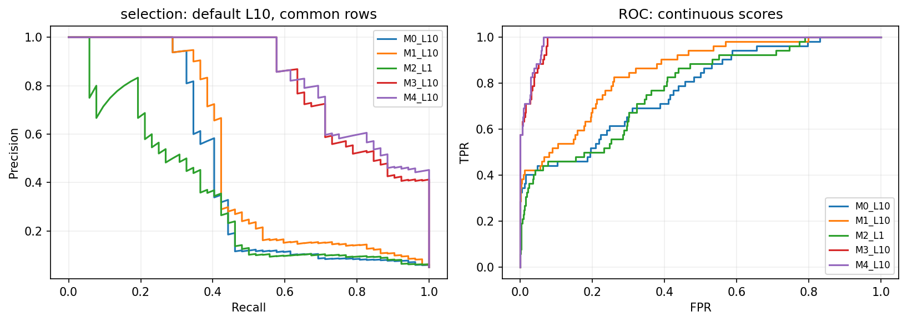
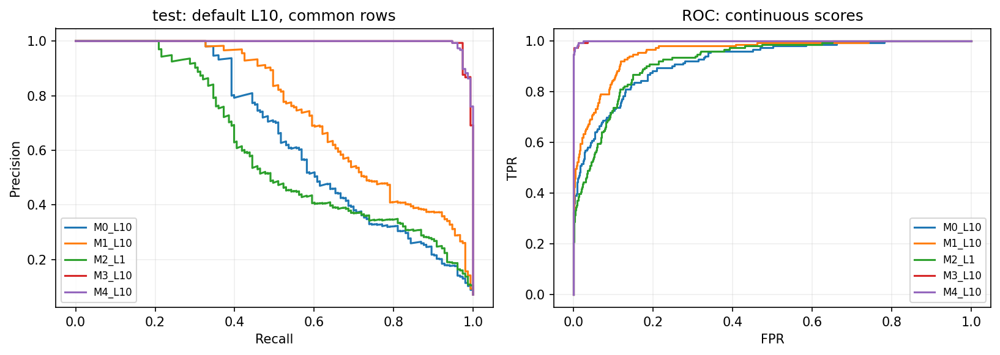
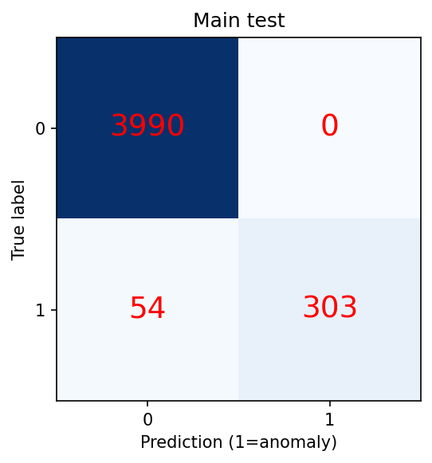
AP는 recall 증가량으로 precision을 가중합하는 지표, PR-AUC는 PR곡선을 사다리꼴 적분한 지표로 별도 보고했다. PR/ROC는 연속 점수로 계산한다. 후처리 표의 AP/AUC는 후처리 이전의 연속 점수 평가이며 이진 경보의 AUC가 아니다. 예측 양성이 없으면 Precision=0, F1/F2 분모가 0이면0, 실제 양성/음성 분모가 없거나 단일 클래스 AUC는 미정의(NaN)다.
| key | Recall | F1 | FPR | AP | ||||
|---|---|---|---|---|---|---|---|---|
| mean | std | mean | std | mean | std | mean | std | |
| M2_sensors_0 | 0.52252 | 0.00000 | 0.62037 | 0.00664 | 0.00906 | 0.00101 | 0.57948 | 0.01110 |
| M2_sensors_01 | 0.48348 | 0.02896 | 0.56868 | 0.02628 | 0.01208 | 0.00101 | 0.56877 | 0.01046 |
| M2_sensors_012 | 0.38438 | 0.02267 | 0.48185 | 0.01748 | 0.01175 | 0.00105 | 0.48861 | 0.00658 |
| M2_sensors_02 | 0.42342 | 0.06306 | 0.52641 | 0.05654 | 0.01007 | 0.00050 | 0.48004 | 0.00631 |
| M2_sensors_1 | 0.17417 | 0.00520 | 0.26542 | 0.00580 | 0.00772 | 0.00029 | 0.26163 | 0.00825 |
| M2_sensors_12 | 0.13814 | 0.02896 | 0.19948 | 0.04122 | 0.01376 | 0.00154 | 0.23320 | 0.00980 |
| M2_sensors_2 | 0.11712 | 0.00000 | 0.18354 | 0.00199 | 0.00890 | 0.00077 | 0.18949 | 0.00322 |
한 행 모델의 센서3개 조합에서 평균 Recall은 38.44%였고, AI0 상부진동을 빼면 13.81%로 변했다. F1 변화는 -0.2824, FPR 변화는 +0.20%p다. 이는 관측된 개발 데이터에서의 기여이며 고장의 원인을 뜻하지 않는다.
| removed_feature | delta_Recall | delta_F1 | delta_FPR | delta_AP |
|---|---|---|---|---|
| AI0_Vibration__max | 0.00412 | -0.00226 | 0.00068 | 0.01366 |
| AI0_Vibration__mean | -0.00412 | 0.00584 | -0.00113 | -0.00948 |
| AI0_Vibration__min | -0.01235 | -0.01189 | 0.00068 | -0.02925 |
| AI0_Vibration__rms | 0.00412 | 0.03729 | -0.00474 | 0.00491 |
| AI0_Vibration__std | -0.02881 | -0.01320 | -0.00045 | -0.01852 |
| AI1_Vibration__max | -0.03292 | -0.01012 | -0.00136 | -0.02472 |
| AI1_Vibration__mean | -0.03292 | -0.02728 | 0.00113 | -0.03906 |
| AI1_Vibration__min | 0.00412 | -0.02666 | 0.00429 | -0.00584 |
| AI1_Vibration__rms | -0.03292 | -0.01171 | -0.00113 | -0.01496 |
| AI1_Vibration__std | -0.02058 | -0.01694 | 0.00068 | -0.02441 |
| AI2_Current__max | -0.00000 | 0.02136 | -0.00294 | 0.00809 |
| AI2_Current__mean | 0.00412 | 0.01217 | -0.00136 | 0.00100 |
| AI2_Current__min | -0.00412 | 0.00736 | -0.00136 | -0.01402 |
| AI2_Current__rms | -0.02469 | -0.03013 | 0.00226 | -0.01835 |
| AI2_Current__std | -0.02881 | -0.01090 | -0.00090 | -0.01654 |
| none | 0.00000 | 0.00000 | 0.00000 | 0.00000 |
센서 조합 비교는 M2의 7개 부분집합, 특징 제거는 M4 길이10의 15개 특징을 하나씩 제거한 개발 실험이다. 모두 세 seed, 정상 보정 목표FPR1%, 동일 선택 행에서 비교했다. 최종 모델 선택 후보를 늘리는 데 사용하지 않았다. 단일 센서가 놓치고 조합이 탐지한 행은 tables/sensor_combination_rescues.csv에 저장했다. 제거 효과는 예측상의 기여이며 물리적 고장 원인 증명이 아니다.
| condition | group | normal_n | anomaly_n | FP | FN | FPR | FNR |
|---|---|---|---|---|---|---|---|
| burst_start_first_9_rows | later | 1476 | 81 | 16 | 1 | 0.01084 | 0.01235 |
| burst_start_first_9_rows | start | 510 | 30 | 0 | 11 | 0.00000 | 0.36667 |
| short_burst_under_10_rows | long | 1962 | 108 | 16 | 11 | 0.00815 | 0.10185 |
| short_burst_under_10_rows | short | 24 | 3 | 0 | 1 | 0.00000 | 0.33333 |
| fallback | False | 1967 | 92 | 16 | 2 | 0.00813 | 0.02174 |
| fallback | True | 19 | 19 | 0 | 10 | 0.00000 | 0.52632 |
| AI0_Vibration_absolute_train_quartile | Q1 | 519 | 7 | 5 | 1 | 0.00963 | 0.14286 |
| AI0_Vibration_absolute_train_quartile | Q2 | 523 | 9 | 2 | 1 | 0.00382 | 0.11111 |
| AI0_Vibration_absolute_train_quartile | Q3 | 507 | 16 | 5 | 1 | 0.00986 | 0.06250 |
| AI0_Vibration_absolute_train_quartile | Q4 | 437 | 79 | 4 | 9 | 0.00915 | 0.11392 |
| AI1_Vibration_absolute_train_quartile | Q1 | 553 | 6 | 2 | 0 | 0.00362 | 0.00000 |
| AI1_Vibration_absolute_train_quartile | Q2 | 545 | 10 | 2 | 0 | 0.00367 | 0.00000 |
| AI1_Vibration_absolute_train_quartile | Q3 | 462 | 33 | 4 | 6 | 0.00866 | 0.18182 |
| AI1_Vibration_absolute_train_quartile | Q4 | 426 | 62 | 8 | 6 | 0.01878 | 0.09677 |
| AI2_Current_absolute_train_quartile | Q1 | 499 | 47 | 2 | 3 | 0.00401 | 0.06383 |
| AI2_Current_absolute_train_quartile | Q2 | 532 | 16 | 1 | 3 | 0.00188 | 0.18750 |
| AI2_Current_absolute_train_quartile | Q3 | 545 | 12 | 2 | 1 | 0.00367 | 0.08333 |
| AI2_Current_absolute_train_quartile | Q4 | 410 | 36 | 11 | 5 | 0.02683 | 0.13889 |
| current_change_absolute_train_quartile | Q1 | 552 | 20 | 4 | 2 | 0.00725 | 0.10000 |
| current_change_absolute_train_quartile | Q2 | 475 | 21 | 2 | 1 | 0.00421 | 0.04762 |
| current_change_absolute_train_quartile | Q3 | 502 | 9 | 2 | 1 | 0.00398 | 0.11111 |
| current_change_absolute_train_quartile | Q4 | 399 | 57 | 8 | 4 | 0.02005 | 0.07018 |
| current_change_absolute_train_quartile | unknown_at_burst_start | 58 | 4 | 0 | 4 | 0.00000 | 1.00000 |
| AI0_abs_high_x_current_abs_high | vibration_high_current_high | 149 | 33 | 1 | 4 | 0.00671 | 0.12121 |
| AI0_abs_high_x_current_abs_high | vibration_high_current_low | 288 | 46 | 3 | 5 | 0.01042 | 0.10870 |
| AI0_abs_high_x_current_abs_high | vibration_low_current_high | 261 | 3 | 10 | 1 | 0.03831 | 0.33333 |
| AI0_abs_high_x_current_abs_high | vibration_low_current_low | 1288 | 29 | 2 | 2 | 0.00155 | 0.06897 |
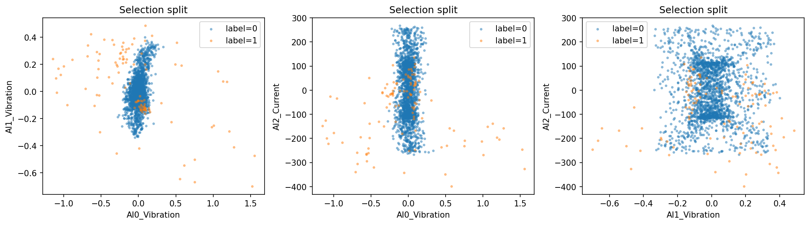
개발 검증의 버스트 첫9행에서는 정상 510개 중 FP 0개, 이상 30개 중 FN 11개였다. 이후 행에서는 정상 1476개 중 FP 16개, 이상 81개 중 FN 1개였다. 행 수와 시계열 의존성이 달라 오류 수만으로 집중도를 단정하지 않는다.
조건 경계는 정상 학습 센서 절댓값·버스트 내부 전류 변화의 사분위수다. 실제 부하/작업 조건이 없어 관측값 기반 분류다. 버스트 시작 전류 차분은 알 수 없음으로 남겼다. 오류 수뿐 아니라 조건별 정상·이상 분모와 FPR/FNR를 함께 저장했다. 최종 오류 조건 분석은 한계 설명용이며 재튜닝하지 않았다. tables/error_conditions_test.csv · predictions/main_selection_FP_FN.csv · predictions/main_test_FP_FN.csv
| policy | TP | FN | FP | TN | Recall | Precision | F1 | F2 | FPR | normal_alarm_episodes | duplicate_episodes | anomaly_bursts_without_alarm | observed_start_to_first_alarm_median_seconds |
|---|---|---|---|---|---|---|---|---|---|---|---|---|---|
| none | 315 | 42 | 1 | 3989 | 0.88235 | 0.99684 | 0.93611 | 0.90310 | 0.00025 | 1 | 3 | 0 | 0.00000 |
| consecutive2 | 299 | 58 | 0 | 3990 | 0.83754 | 1.00000 | 0.91159 | 0.86566 | 0.00000 | 0 | 3 | 0 | 0.10000 |
| two_of_three | 303 | 54 | 0 | 3990 | 0.84874 | 1.00000 | 0.91818 | 0.87522 | 0.00000 | 0 | 3 | 0 | 0.10000 |
| policy | newly_missed_anomaly_rows | newly_detected_anomaly_rows | suppressed_false_positive_rows | new_false_positive_rows |
|---|---|---|---|---|
| none | 0 | 0 | 0 | 0 |
| consecutive2 | 16 | 0 | 1 | 0 |
| two_of_three | 16 | 4 | 1 | 0 |
새로 놓친 이상과 새로 탐지한 이상을 별도로 셌다. 최근3회 중2회 규칙은 직전 양성의 영향으로 현재 원시 판단이 음성인 행에서도 경보할 수 있어, 미탐의 순증가와 새로 놓친 행 수가 다를 수 있다. 후처리의 최종 F1이 원시 판단보다 낮아졌더라도 최종 결과를 보고 선택을 바꾸지 않았다.
연속2회와 최근3회 중2회를 비교했고 버스트 경계에서 상태를 초기화했다. 최근3회 규칙은 현재까지 최대3개 관측 중 2개가 양성이면 경보한다. 미래 관측을 사용하지 않고 과거로 소급하지 않는다. 중복 경보는 동일 버스트 내 첫 경보 episode 뒤 추가로 시작한 episode 수다. 경보 episode는 0→1 전이로 센다. 독립 고장 수가 아니다.
실제 고장 시작 시각·정상→고장 전환·정비 확정 시각이 없으며 라벨 생성 방식도 순간별 판정인지 파일 단위 부여인지 미확인이다. 파일 첫 행 또는 버스트 시작을 고장 시작으로 가정하지 않았다. 관측 시작→첫 경보의 중앙값은 경보가 있는 버스트에 한정되며 무경보 버스트 수를 함께 제시했다. 사전 예측 시간이나 실제 고장 탐지 지연으로 해석할 수 없다.
길이5/10/20 윈도우 준비시간은 연속 0.1초 관측에서 각각0.4/0.9/1.9초다. 실제 TimeStamp로 계산한 준비시간과 윈도우 전체 경과시간을 별도 저장했다. 계산시간은 CPU 배치 추론+모델 로딩에 걸린 실측값이며 준비시간과 다르다. 단일 행 실시간 배포 지연 보장은 아니다. 시간당 경보율은 미관측 공백의 분모 혼동을 피하려고 주 지표로 사용하지 않았다.
tables/window_warmup.csv · tables/computation_time.csv · tables/postprocessing_delays_test.csv · tables/alarms_main_test.csv
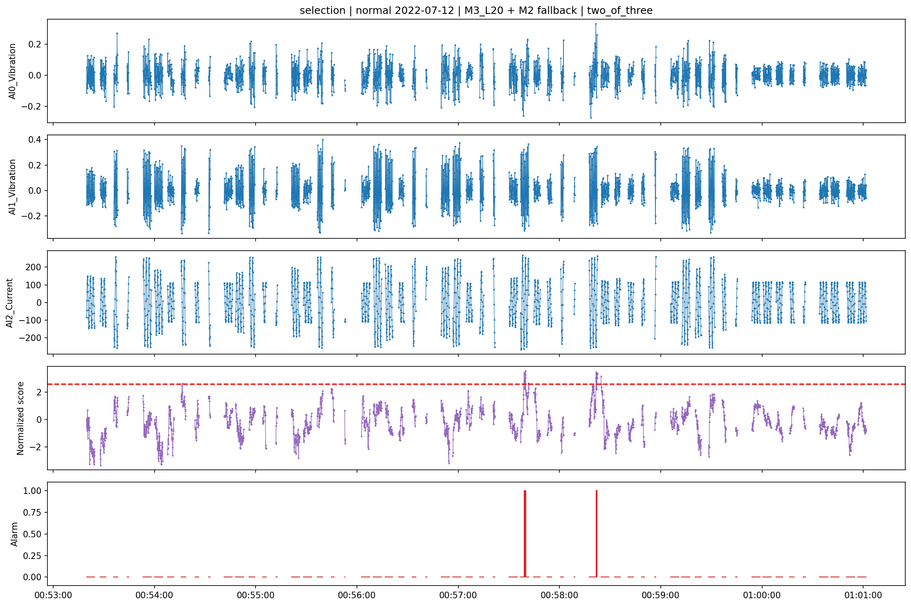
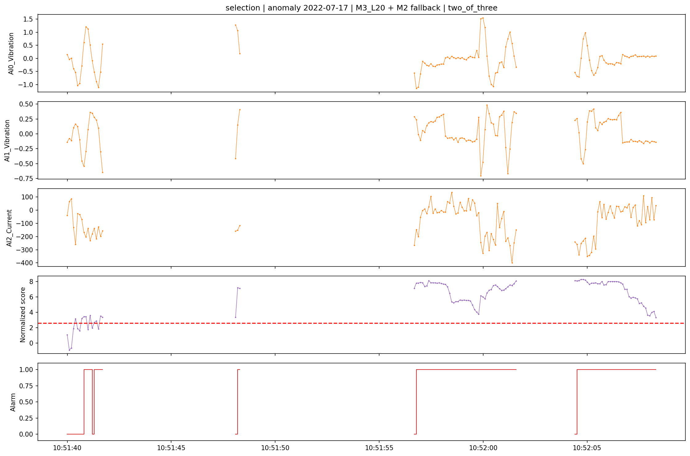
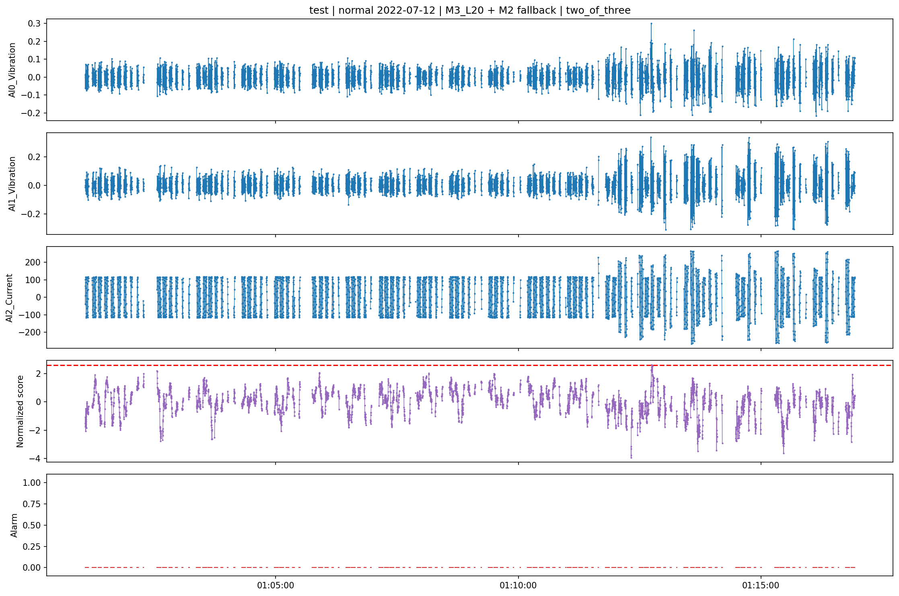
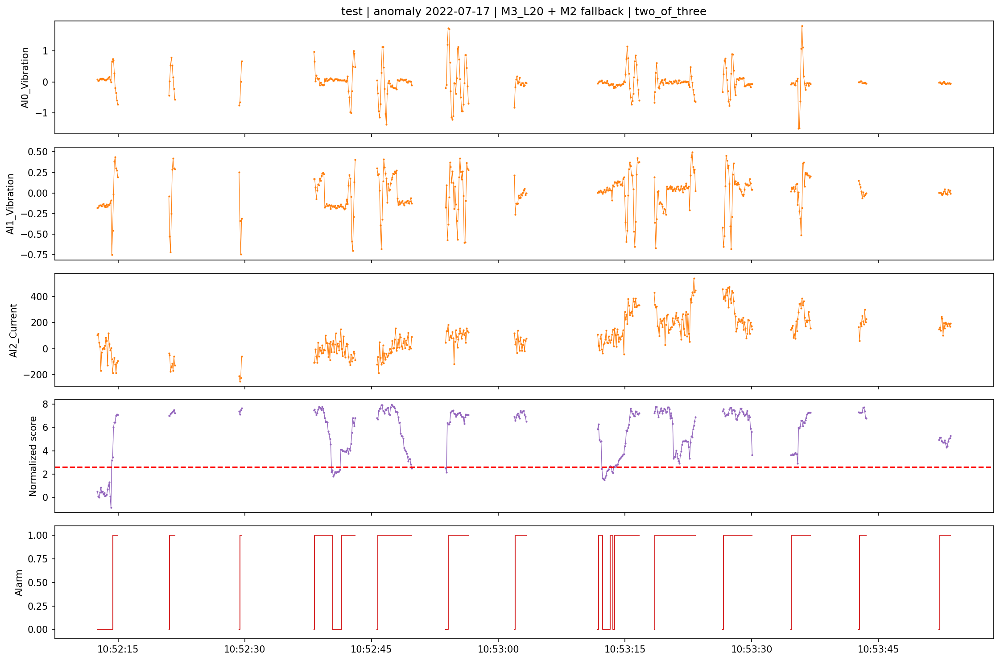
| role | key | split | normal_fit_n | anomaly_fit_n | slope | probability_threshold | judgement_disagreements | Brier | log_loss | uncalibrated_sigmoid_proxy_Brier | uncalibrated_sigmoid_proxy_log_loss | constant_prevalence_Brier | constant_prevalence_log_loss |
|---|---|---|---|---|---|---|---|---|---|---|---|---|---|
| main | M3_L20 | selection | 2011 | 132 | 3.86025 | 0.32972 | 0 | 0.00910 | 0.03848 | 0.25492 | 0.71696 | 0.05021 | 0.20774 |
| f1_alternative | M3_L20 | selection | 2011 | 132 | 3.86025 | 0.32972 | 0 | 0.00910 | 0.03848 | 0.25492 | 0.71696 | 0.05021 | 0.20774 |
| role | key | split | normal_fit_n | anomaly_fit_n | slope | probability_threshold | judgement_disagreements | Brier | log_loss | uncalibrated_sigmoid_proxy_Brier | uncalibrated_sigmoid_proxy_log_loss | constant_prevalence_Brier | constant_prevalence_log_loss |
|---|---|---|---|---|---|---|---|---|---|---|---|---|---|
| main | M3_L20 | test | 2011 | 132 | 3.86025 | 0.32972 | 0 | 0.00960 | 0.04522 | 0.27111 | 0.73214 | 0.07580 | 0.28725 |
| f1_alternative | M3_L20 | test | 2011 | 132 | 3.86025 | 0.32972 | 0 | 0.00960 | 0.04522 | 0.27111 | 0.73214 | 0.07580 | 0.28725 |
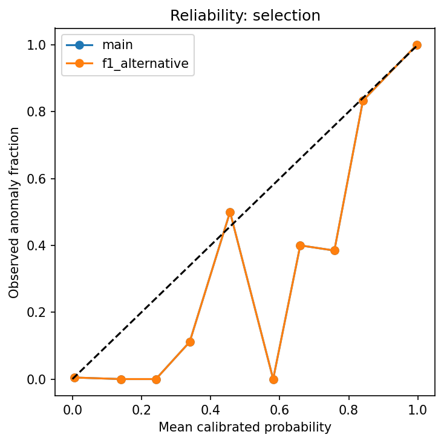
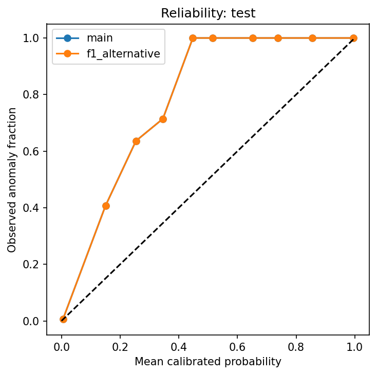
| role | version | TP | FN | FP | TN | N | positive_rate | Recall | Precision | F1 | F2 | FPR | FNR | AP | PR_AUC_trapezoid | ROC_AUC | Accuracy | FP_per_1000 |
|---|---|---|---|---|---|---|---|---|---|---|---|---|---|---|---|---|---|---|
| main | raw | 315 | 42 | 1 | 3989 | 4347 | 0.08213 | 0.88235 | 0.99684 | 0.93611 | 0.90310 | 0.00025 | 0.11765 | 0.95862 | 0.95860 | 0.98113 | 0.99011 | 0.25063 |
| main | probability | 315 | 42 | 1 | 3989 | 4347 | 0.08213 | 0.88235 | 0.99684 | 0.93611 | 0.90310 | 0.00025 | 0.11765 | 0.95862 | 0.95860 | 0.98113 | 0.99011 | 0.25063 |
| f1_alternative | raw | 315 | 42 | 1 | 3989 | 4347 | 0.08213 | 0.88235 | 0.99684 | 0.93611 | 0.90310 | 0.00025 | 0.11765 | 0.95862 | 0.95860 | 0.98113 | 0.99011 | 0.25063 |
| f1_alternative | probability | 315 | 42 | 1 | 3989 | 4347 | 0.08213 | 0.88235 | 0.99684 | 0.93611 | 0.90310 | 0.00025 | 0.11765 | 0.95862 | 0.95860 | 0.98113 | 0.99011 | 0.25063 |
sigmoid는 정상 보정2011행·이상 보정132행의 라벨을 사용했다. 양의 점수 방향을 유지하도록 slope≥0 제약과 L2 규제를 주었다. 같은 자료에서 보정 성능을 주장하지 않고 뒤쪽 선택 검증과 최종 평가에서 Brier/log loss·신뢰도를 확인했다. 보정 전 원시 점수는 확률이 아니므로 Brier를 직접 계산하지 않았다. 비교용 sigmoid(score)는 명시적으로 미보정 가짜 확률 기준이며, 상수 보정집합 이상비율도 함께 비교했다.
판정 임계값을 sigmoid로 대응시켜 전후 판정 차이를 저장했다. 확률 보정이 좋아도 탐지율 자체가 자동 개선되는 것은 아니다. 132개 이상 표본이 네 관측 버스트·한 날짜에 몰려 있어 신뢰 가능한 현장 고장 확률로 볼 수 없다. 현장 이상 비율과 운전조건이 달라지면 재검증이 필요하다.
| 평가 요구사항 | 실험 방법 | 실제 결과 | 근거 파일 | 한계와 추가 정보 |
|---|---|---|---|---|
| ① 데이터 이해·진단 15 | 변수 근거, 중복/시간 점검, 사전 분할 | 정상19999·이상600, 버스트599·21, 보정/선택/최종 분리 | manifests/configs/frozen/audit.json; split_summary.csv; tables/burst_summary.csv | 제품·설비ID·단위·운전조건 미확인; 추가 메타데이터 필요 |
| ② AI 모델 40 | M0~M4, 5/10/20행, 3seed, 공통행·전체행 | M3_L20, 최종 Recall 0.8487, F1 0.9182, FPR 0.0000 | tables/metrics_test.csv; selected_test.csv; selection_lock.json | 하나의 정상 날짜와 이상 날짜; 정확한 가이드북 원문 재현 아님 |
| ③ 영향·오류 15 | 7센서조합, 15특징 제거, 조건별 오류 분모 | 선정 모델 FP0, FN54; 제거 효과 전부 공개 | tables/sensor_combinations.csv; feature_ablation.csv; error_conditions_selection.csv; predictions/main_test_FP_FN.csv | 센서 기여는 물리 원인 아님; 운전 메타데이터 필요 |
| ④ 현장활용 10 | 점검 우선순위·근거 시각·공백표시·지속경보 정책 | 행별 점수/경보/담당모델 및 사례 CSV 생성 | predictions/main_test.csv; figures/timeline_test_label1.png; src/infer.py | 비용·불량·비가동 감소 미검증; 현장 파일럿 필요 |
| ⑤ 차별성 10 | 버스트 쌍 비교, M2 보완, 후처리, 확률 보정 | 후처리 FP 1→0, FN 42→54; 개선/악화 모두 저장 | tables/burst_pairs_test.csv; matched_training_count.csv; postprocessing_test.csv; probability_test.csv | 보완은 결합모델 효과; 공통행은 시작 구간 제외; 확률 외부검증 필요 |
| ⑥ 코드·재현성 10 | 고정해시, 환경버전, seed, 체크포인트, 단일명령 | 전처리~최종보고 코드와 모델·전처리 객체 저장 | manifests/environment.json; models/; ../../README.md; ../../src/ | 라이브러리/CPU 차이로 실수 오차·실행시간 차이 가능 |
점수가 높은 관측과 지속 경보를 점검·품질검사 우선순위로 제공한다. 작업자에게 시각, 상·하부 진동과 전류, 원시 판단과 지속 경보, M2 보완 여부, 데이터 공백을 함께 보여준다. 순간 변화와 지속 이상을 분리하되 짧은 이상 손실을 감수할 수 있는지 현장에서 결정해야 한다. 이 출력은 자동 설비 정지 명령이 아니다.
압력 안정화, 불량 감소, 비가동 및 비용 절감은 기대 활용 효과다. 압력·품질·생산·정비 기록과 연결한 전향적 평가가 없어 검증 성과로 주장하지 않는다. 추가 검증은 같은 운전조건에서 정상과 고장을 모두 포함하고 날짜·설비를 통째로 분리한 외부 평가가 필요하다.
새 실행: python3 scripts/run_all.py. 기존 실행 이어가기: python3 scripts/run_all.py --resume runs/실행폴더. 추론: python3 src/infer.py --run runs/실행폴더 --input 한_시계열.csv --output 새_예측.csv. 자세한 설치와 재실행 절차는 프로젝트 README.md에 있다. 실행별 폴더를 쓰며 원본·기존 실행을 덮어쓰지 않는다.
데이터 출처: 중소벤처기업부, Korea AI Manufacturing Platform(KAMP), 소성가공 예지보전 AI 데이터셋, 스마트제조혁신추진단(㈜인터엑스), 2022.12.23., www.kamp-ai.kr. 가이드북은 프로젝트 references/guidebook.pdf, 확인한 쪽과 차이는 references/evidence.txt.
방법 참고: Liu·Ting·Zhou (2008), Saito·Rehmsmeier (2015), Isolation Forest 점수 정의, AP 정의, 확률 보정, 시간 순서 검증. 이 문헌은 방법 근거이며 이번 분할·FPR·버스트 기준의 공식 출처가 아니다.